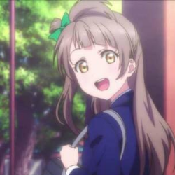

名字:
remon
性别:男

介绍:男孩子 / 程序猿
问题
答案
新建于:2015-10-24 11:00:44 PM，更新于2015-10-24 11:12:54 PM
正文: 初次不建议选择长发或卷发，打理起来简直要命……
50cm左右挺好的，打理不那么麻烦还能绑个马尾什么的（*/∇＼*）
不是cos的话感觉还是黑色比较日常容易驾驭，不想修眉毛的话就选能遮住眉毛的齐刘海
留鬓角在脸的两侧是必杀！